![[Screenshot]](images/vehicles-pv-rdf.png)
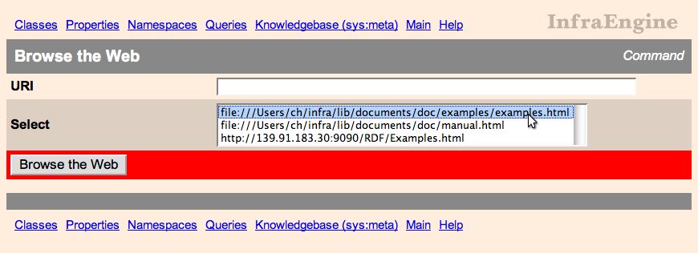
You can enter a URI to open, or select from a list of known or previously entered URIs. To proceed with the tour, choose the.../examples.html document and submit the Browse
the Web button.
The opened Web page is now displayed decorated with an additional menu at the top that lists URLs of RDF pages referenced from the page along with facilities to load them into an InfraEngine knowledgebase. Pages opened by following hyperlinks also will be displayed with such a header.
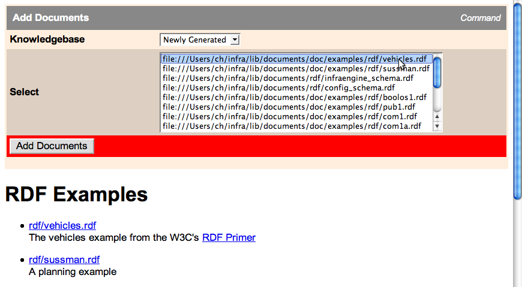
One or more RDF documents can be chosen from the Select field. The knowledgebase into which the documents are loaded can be chosen with the Knowledgebase menu. A special entry Newly Generated effects that a newly constructed knowledgebase is used.
To continue with the tour, choose .../vehicles.rdf from the
Select field. The contents of this file are shown in Section Appendix: The Vehicles RDF Document. Choose Newly
Generated from the Knowledgebase menu and submit the Add
Documents button.
A result page that confirms that the document has successfully been loaded is opened. The current knowledgebase is now the newly generated knowledgebase sys:gen1. Unless another knowledgebase is chosen as current, the other menus such as Classes, Properties, etc. refer to this knowledgebase.
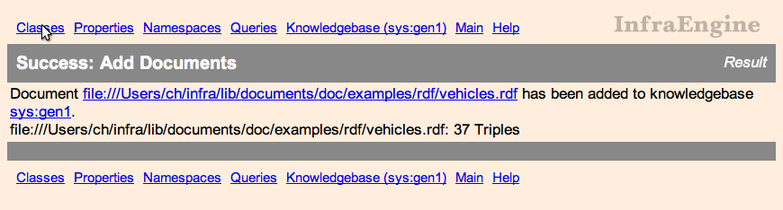
The subclass relationship is indicated by indentation. If the classes have values for the rdfs:comment property, these are also displayed in abbreviated form.
Choose the Properties menu to enter a Properties page that displays the tree of all properties in the current knowledgebase, similar to the Classes page.
Choose the Namespaces menu to enter a Namespaces page that displays information of the namespace abbreviations used to display items from the current knowledgebase. The Namespaces page also provides the Add Namespace... command that allows the user to define further namespace abbreviations. Displayed namespace abbreviations in item identifiers, for example ex in ex:PassengerVehicle, link to the corresponding entry in a Namespaces page.
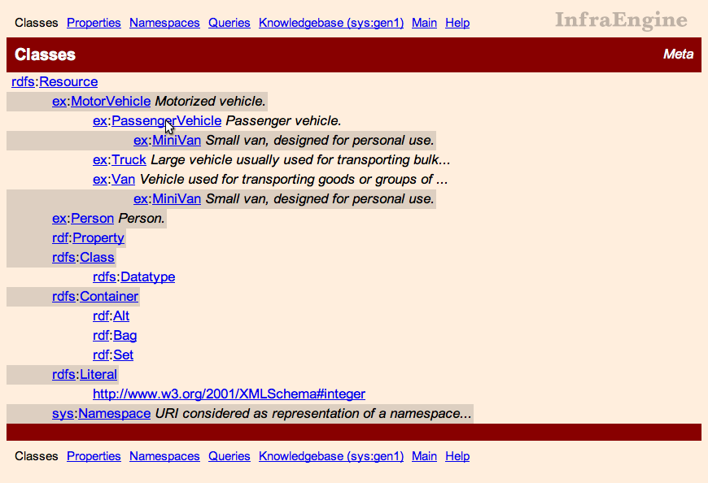
The class ex:PassengerVehicle links to a corresponding Class page.The direct super- and subclasses (those with no other proper super- or subclass, respectively, in between) are shown. Further, all properties of which the class is a domain or range are shown. Since inheritance is considered there, these are called effective. In addition, the direct instances of the class – i.e. those which are not an instance of a proper subclass – are listed.
Transparently Performed Schema Inferences. The displayed facts incorporate the results of inferences in accordance with the RDF Semantics, which are transparently performed by InfraEngine. From the facts read in from RDF documents and built-in entailment rules, as specified in the RDF Semantics, a deductive closure is automatically computed. (The rules actually used by the InfraEngine implementation can be found in the source file knowledgebase.pl. They are processed by a generic rule interpreter and thus easy to modify.)
Specialized Views for Objects of Certain Types. A class in RDF is an object of type rdfs:Class. A Class page provides a specialized view on such objects, which displays features pertaining specifically to classes. Other types of RDF objects for which specialized views are provided by InfraEngine include properties – objects of type rdf:Property – with Property pages and knowledgebases (objects of type sys:Knowledgebase) with Knowledgebase pages.
Several views are available for all RDF objects, including objects which also have specialized views. The different views can be opened by the respective links in the Other Views field. For the class object ex:PassengerVehicle, they look as follows.
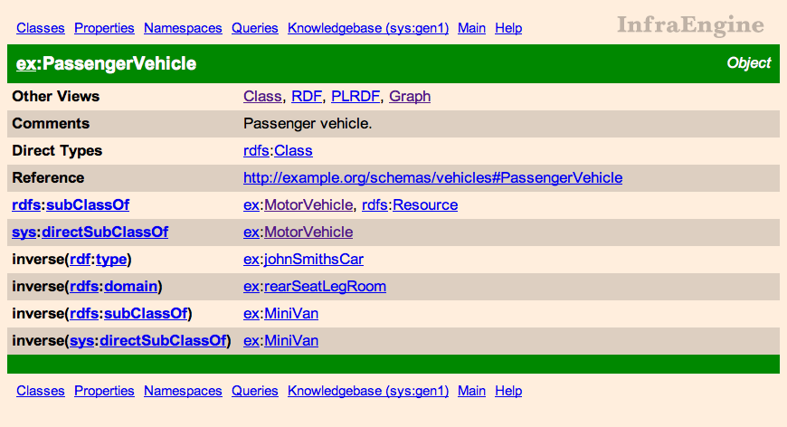
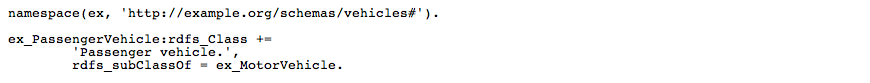
The nodes in the image are clickable, leading to a graph view of the represented object. This allows graphical navigation through RDF structures.
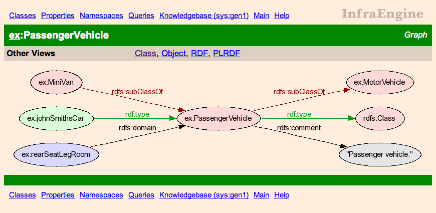
On our tour, we now again return back to the Classes page.
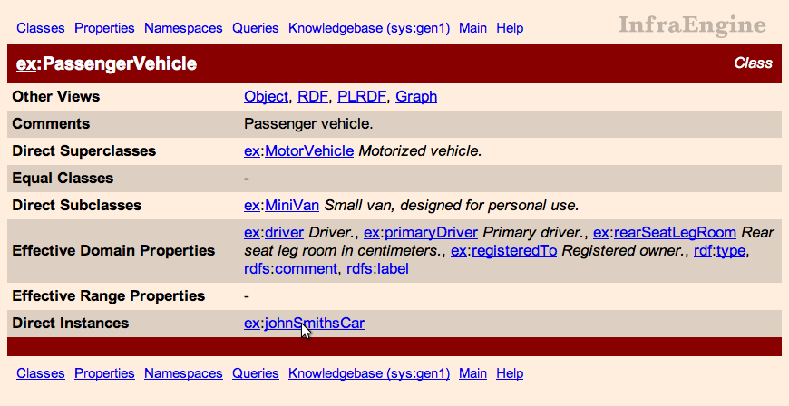
The last field of the Class page lists the direct instances of the class, in our example just ex:johnSmithsCar. Following the link of this instance leads to an Object view of the instance, showing its properties and values in tabular form. The value of the Reference field is a link with the URI of the object as URL. (The URI of the example, hrefhttp://www.example.org/schemas/vehicles#johnSmithsCar, does not reference a useful Web document.)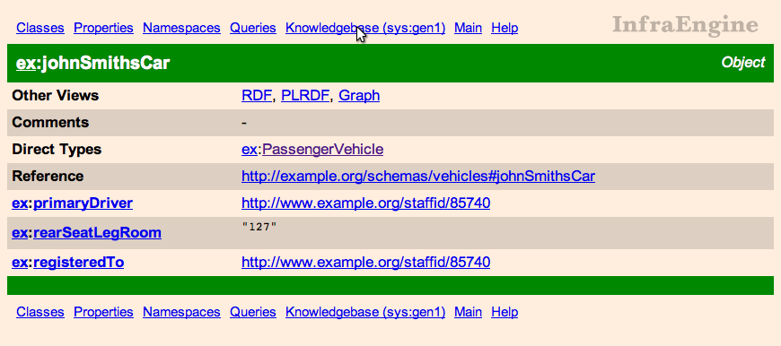
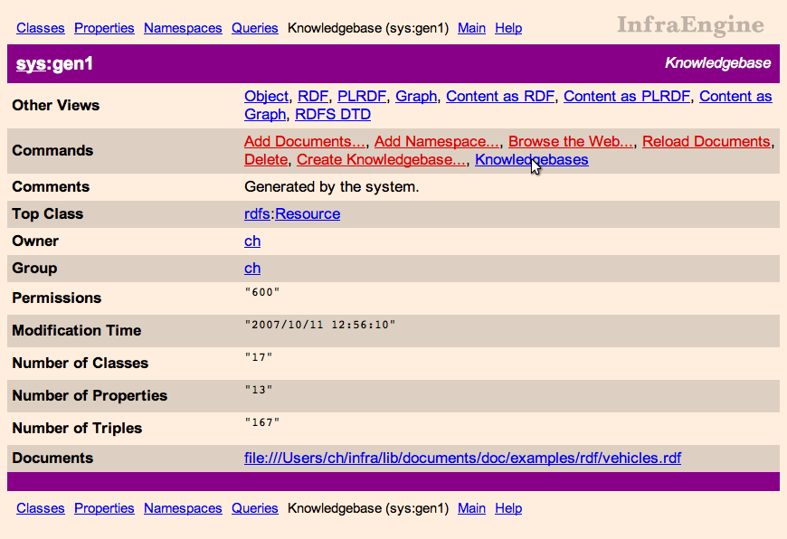
The Knowledgebase view shows statistic about the knowledgebase and gives references to the documents that have been loaded into it. The Commands field provides access to operations on the particular knowledgebase and on knowledgebases in general. The operation Reload Documents effects that all reloading of all loaded documents, which is useful for developing RDF documents. The Other Views field provides access to other views of the knowledgebase object, as shown for class objects in Section Generic Object Views. In addition, specific views for knowledgebases are supported, two of which we describe in the following section.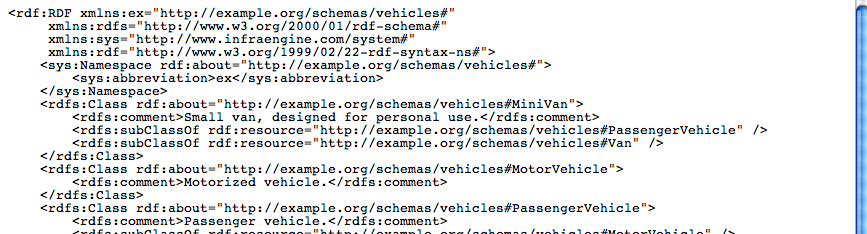
The content of the knowledgebase is dumped as an RDF document. In contrast, the RDF view expresses the knowledgebase object itself as RDF object, and not its content.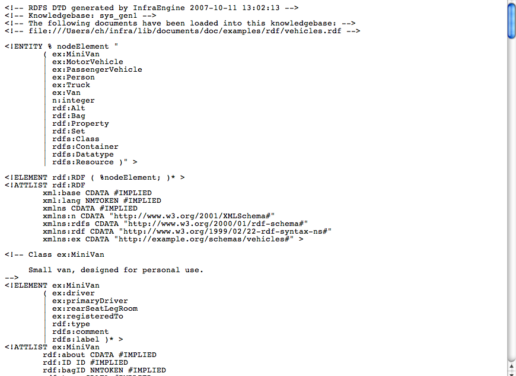
The schema of the knowledgebase is dumped as a DTD. These DTDs can for example be used to drive an XML editor, such as the psgml Emacs mode.The knowledgebase identifiers in the list link to the respective Knowledgebase pages, making the referenced knowledgebase the current one.
This is the vehicles example from the W3C's RDF Primer, with slight changes as noted in the comment on the top of the document.
<?xml version="1.0"?>
<!DOCTYPE rdf:RDF [<!ENTITY xsd "http://www.w3.org/2001/XMLSchema#">]>
<rdf:RDF
xmlns:rdf="http://www.w3.org/1999/02/22-rdf-syntax-ns#"
xmlns:rdfs="http://www.w3.org/2000/01/rdf-schema#"
xml:base="http://example.org/schemas/vehicles"
xmlns:ex="http://example.org/schemas/vehicles#">
<!--
--
-- This is a combination of "Example 28: The Full Vehicle Schema"
-- and "Example 29: An Instance of ex:PassengerVehicle" in the
-- W3C RDF Primer, http://www.w3.org/TR/2004/REC-rdf-primer-20040210/.
--
-- The following changes have been made:
--
-- added a rdfs:range to driver
-- - I see no reason why it should not have a range declaration
--
-- added rdfs:comment attributes
-- - to demonstrate how comments are displayed in the InfraEngine
-- schema browser
--
-- added xmlns:ex="http://example.org/schemas/vehicles#" to the header
-- - the namespace is then automatically used as abbreviation
-- in the InfraEngine schema browser
--
-->
<rdfs:Class rdf:ID="MotorVehicle">
<rdfs:comment>Motorized vehicle.</rdfs:comment>
</rdfs:Class>
<rdfs:Class rdf:ID="PassengerVehicle">
<rdfs:subClassOf rdf:resource="#MotorVehicle"/>
<rdfs:comment>Passenger vehicle.</rdfs:comment>
</rdfs:Class>
<rdfs:Class rdf:ID="Truck">
<rdfs:subClassOf rdf:resource="#MotorVehicle"/>
<rdfs:comment>Large vehicle usually used for transporting bulk goods
or other materials.</rdfs:comment>
</rdfs:Class>
<rdfs:Class rdf:ID="Van">
<rdfs:subClassOf rdf:resource="#MotorVehicle"/>
<rdfs:comment>Vehicle used for transporting goods or groups of
people.</rdfs:comment>
</rdfs:Class>
<rdfs:Class rdf:ID="MiniVan">
<rdfs:subClassOf rdf:resource="#Van"/>
<rdfs:subClassOf rdf:resource="#PassengerVehicle"/>
<rdfs:comment>Small van, designed for personal use.</rdfs:comment>
</rdfs:Class>
<rdfs:Class rdf:ID="Person">
<rdfs:comment>Person.</rdfs:comment>
</rdfs:Class>
<rdfs:Datatype rdf:about="&xsd;integer"/>
<rdf:Property rdf:ID="registeredTo">
<rdfs:domain rdf:resource="#MotorVehicle"/>
<rdfs:range rdf:resource="#Person"/>
<rdfs:comment>Registered owner.</rdfs:comment>
</rdf:Property>
<rdf:Property rdf:ID="rearSeatLegRoom">
<rdfs:domain rdf:resource="#PassengerVehicle"/>
<rdfs:range rdf:resource="&xsd;integer"/>
<rdfs:comment>Rear seat leg room in centimeters.</rdfs:comment>
</rdf:Property>
<rdf:Property rdf:ID="driver">
<rdfs:domain rdf:resource="#MotorVehicle"/>
<rdfs:range rdf:resource="#Person"/>
<rdfs:comment>Driver.</rdfs:comment>
</rdf:Property>
<rdf:Property rdf:ID="primaryDriver">
<rdfs:subPropertyOf rdf:resource="#driver"/>
<rdfs:comment>Primary driver.</rdfs:comment>
</rdf:Property>
<PassengerVehicle rdf:ID="johnSmithsCar">
<registeredTo rdf:resource="http://www.example.org/staffid/85740"/>
<rearSeatLegRoom rdf:datatype="&xsd;integer">127</rearSeatLegRoom>
<primaryDriver rdf:resource="http://www.example.org/staffid/85740"/>
</PassengerVehicle>
</rdf:RDF>